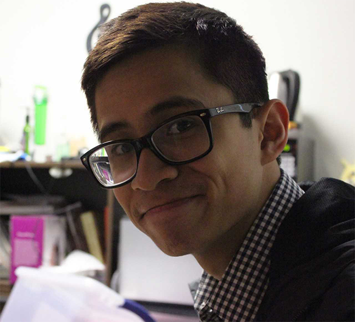

James Nguyen
I'm a Developer and Designer
Let me start off by introducing myself. My Name is James Nguyen and I am a Computer Science Major at Michigan State University, home of the Spartans! I was born and raised in Lansing, Michigan. I have two brothers: Jason who is my identical twin that also goes to Michigan State studying Political Science and John who goes to Ferris State University in Big Rapid, Michigan where he is studying Computer Information Technology. I would also like to thank my parents: Kim, Ngan and my granparents: Sum and Hoa for supporting me through my wonderful journey called life!
To start out my academic career, I attended Averill Elementary School which is part of the Lansing Schools District where I had numerous mentors who helped paved my future. I stayed at Averill until sixth grade where I then transferred to Waverly Communities Schools, where I met so many people: teachers and friends who made my secondary education both educational and memorable. To learn more about me, please feel free to either contact me or check out the rest of my website!